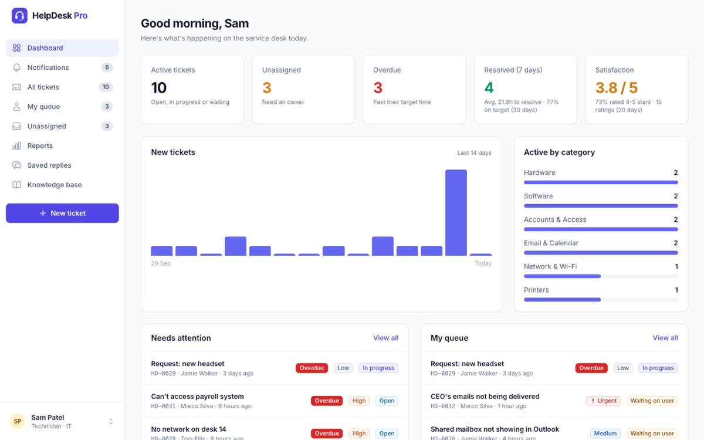

Featured project · Full-stack
HelpDesk Pro: IT service desk
A complete ticketing system for IT support teams. Employees raise tickets and get help from a knowledge base that suggests fixes while they type; technicians work the queue with target times, internal notes and saved replies; admins manage users and reports.
- Role-based permissions for employees, technicians and admins
- Email and in-app notifications, file attachments and full activity history
- Reports, CSV export and a token-authenticated REST API
- 90+ automated tests and security hardening (CSP, rate limiting)
- Laravel 12
- PHP
- MySQL / SQLite
- Tailwind CSS
- Alpine.js
- REST API
- PHPUnit